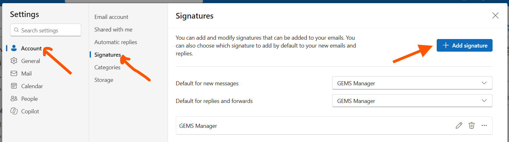
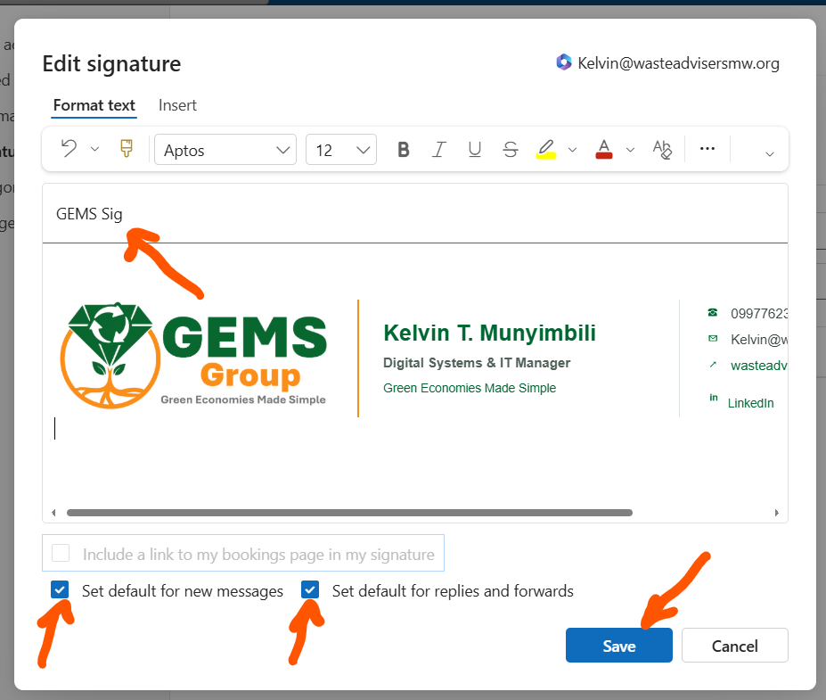

ONE TEAM. ONE IDENTITY.Your details.
Your details.
Our signature.
Create a consistent email signature in a few moments.
Your details
01Signature preview
02Fill in your details to create your signature.
How To Add It To Outlook
- Enter your details above and select Copy signature.
- In Outlook, go to File → Account Info → Signatures → Add Signature.
- Enter a signature name, such as GEMS Signature.
- Click the editing space below the signature name. Press Enter three times to add space, then press Ctrl + V to paste your copied signature.
- Select Set default for new messages and Set default for replies and forwards if you want the signature added automatically.
- Select Save, then send yourself a test email.
View the Outlook picture guide

